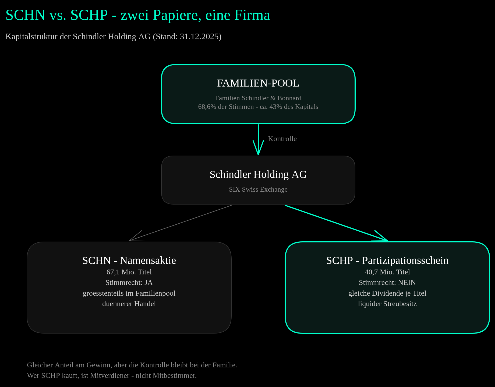
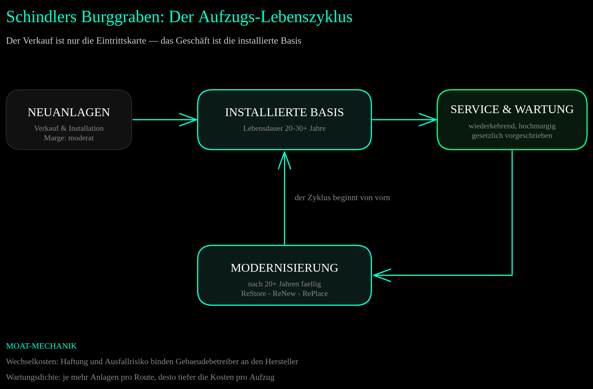
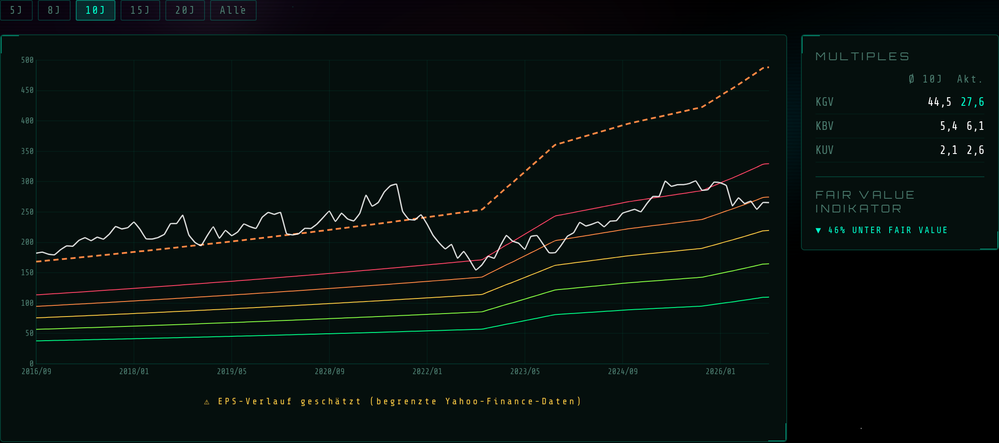
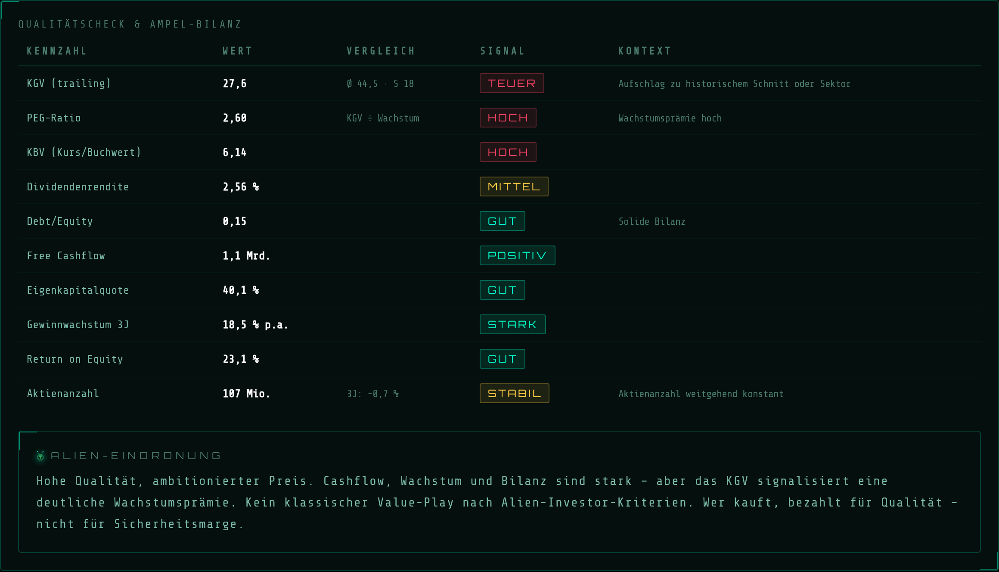
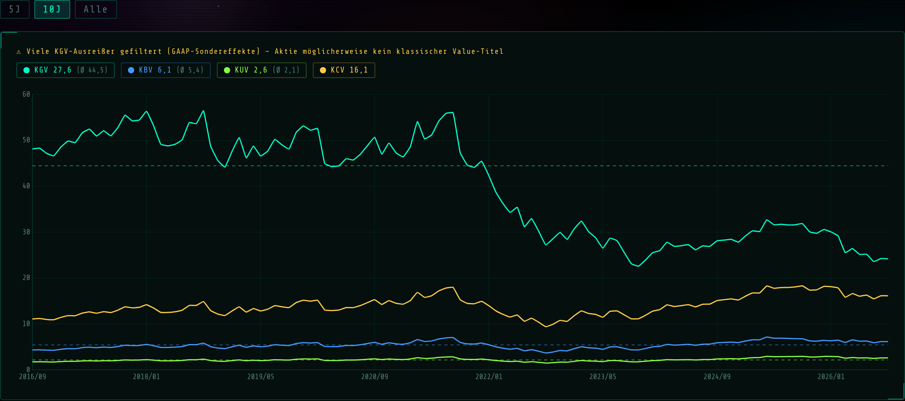
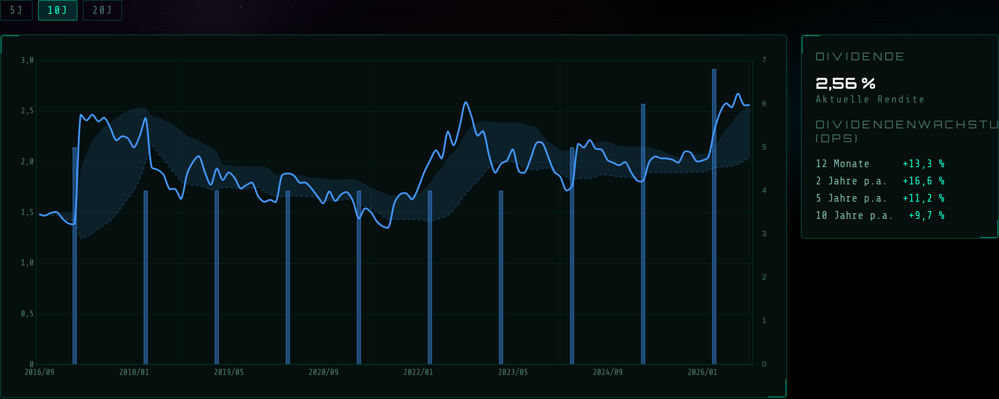

Schindler bewegt nach eigenen Angaben täglich über zwei Milliarden Menschen — und fast niemand denkt dabei an die Firma. Genau das ist das Geschäftsmodell: unsichtbare Infrastruktur, die gesetzlich gewartet werden muss, 20 bis 30 Jahre läuft und danach modernisiert wird. Der Schweizer Konzern hat 2025 seinen vierjährigen Erholungsplan mit einer Rekordmarge abgeschlossen. Die Frage ist nicht, ob das Geschäft gut ist — sondern was man dafür bezahlt.
„Ein Aufzug wird einmal verkauft — und dann drei Jahrzehnte lang gewartet. Schindler verkauft keine Kabinen. Schindler verkauft ein Abo auf die Schwerkraft."
1) Kurzüberblick
| Kennzahl | Wert |
|---|---|
| Ticker | SCHP / SCHN (SIX Swiss Exchange) |
| Kurs SCHP (August 2026) | 265,60 CHF |
| Marktkapitalisierung | ~28 Mrd. CHF |
| KGV (trailing) | 27,6× |
| EPS (TTM) | 9,61 CHF |
| KBV | ~5,5–6 |
| Dividende (GJ 2025) | 6,80 CHF — Rendite 2,6 % |
| Sektor | Industrials / Aufzüge & Fahrtreppen |
Schindler ist einer der grössten Hersteller von Aufzügen, Fahrtreppen und Fahrsteigen der Welt — gegründet 1874 in der Zentralschweiz, operative Zentrale in Ebikon bei Luzern, Holding-Sitz in Hergiswil. Bevor man über das Geschäft spricht, muss man eine Schweizer Eigenheit verstehen: Es gibt zwei Wertpapiere.

Die Kapitalstruktur: Die Familien Schindler und Bonnard kontrollieren über den Aktionärspool 68,6 % der Stimmrechte bei rund 43 % des Kapitals (per 31.12.2025). ↗ Zum Vergrössern klicken
Die Namensaktie SCHN (67,1 Mio. Stück) trägt das Stimmrecht — und liegt mehrheitlich im Familienpool. Der Partizipationsschein SCHP (40,7 Mio. Stück) hat kein Stimmrecht, aber exakt denselben Anspruch auf Dividende und Liquidationserlös je Titel. Wer SCHP kauft, ist Mitverdiener, nicht Mitbestimmer. Dafür ist der PS das liquidere Papier im Streubesitz. Diese Analyse rechnet mit den SCHP-Kursdaten; die Geschäftszahlen gelten für den ganzen Konzern.
2) Geschäftsmodell & Segmente
Drei Geschäftsbereiche, ein Kreislauf: Neuanlagen verkaufen, die installierte Basis warten, Altanlagen modernisieren.
- Neuanlagen — Planung, Produktion und Erstinstallation in Wohn- und Gewerbebauten sowie Infrastruktur. Aktuell das schwächste Glied: Der chinesische Neubaumarkt schrumpft strukturell.
- Service & Wartung — laufende Wartung und Reparatur der installierten Basis. Wiederkehrend, hochmargig, krisenresistent — und in den meisten Ländern gesetzlich vorgeschrieben.
- Modernisierung — Upgrade oder Austausch alternder Anlagen. Der strukturelle Wachstumstreiber: Weltweit gelten über 7 Millionen Anlagen als veraltet, in Europa ist rund die Hälfte aller Aufzüge älter als 20 Jahre.

Der Lebenszyklus-Moat: Der Verkauf ist die Eintrittskarte, Service und Modernisierung sind das Geschäft — abgesichert durch Wechselkosten und Wartungsdichte. ↗ Zum Vergrössern klicken
2025 setzte Schindler 10'947 Mio. CHF um — davon 48 % in EMEA, 29 % in Amerika, 23 % in Asien-Pazifik. Die grössten Einzelmärkte: USA (2'379 Mio.), Schweiz (1'095 Mio.), China (1'068 Mio.). Dass Schindler im Kern ein Dienstleister ist, zeigt die Belegschaft: 61 % der 67'381 Mitarbeiter arbeiten in Installation und Wartung — direkt an den Anlagen.
Der Burggraben hat vier Schichten: Wechselkosten (Haftung und Ausfallrisiko binden Gebäudebetreiber an den Hersteller), Wartungsdichte (je mehr Anlagen pro Route, desto tiefer die Kosten pro Aufzug — kleine Anbieter können nicht mithalten), Technologie (cloudvernetzte Anlagen, Ferndiagnose über Technical Operations Centers, proprietäre Systeme wie das PORT-Transitmanagement) und Regulierung (bei sicherheitskritischer Infrastruktur wechselt niemand zum Billiganbieter).
3) Wachstum & Entwicklung
| Jahr | Umsatz | Reingewinn | EPS | EBIT-Marge |
|---|---|---|---|---|
| 2021 | 11'236 Mio. CHF | 881 Mio. | 7,70 | 10,4 % |
| 2022 ▼ Tief | 11'346 Mio. CHF | 659 Mio. | 5,67 | 8,0 % |
| 2023 | 11'494 Mio. CHF | 935 Mio. | 8,05 | 10,3 % |
| 2024 | 11'236 Mio. CHF | 1'010 Mio. | 8,83 | 11,3 % |
| 2025 ▲ Rekord | 10'947 Mio. CHF | 1'073 Mio. | 9,48 | 12,6 % |
Die zentrale Lesart: Der Umsatz stagniert optisch — der Gewinn explodiert. Der nominale Umsatzrückgang 2025 ist fast vollständig ein Währungseffekt: Der starke Franken kostete allein 2025 rund 431 Mio. CHF Umsatz; in Lokalwährungen wuchs Schindler um 1,3 %. Dahinter lief ein vierjähriger operativer Erholungsplan (2022–2025): Nach dem Einbruch 2022 durch Lieferkettenengpässe, Inflation und China-Lockdowns hat das Management die EBIT-Marge von 8,0 % auf 12,6 % gehoben — Preisdisziplin, Effizienz und ein besserer Mix aus Service und Modernisierung.
Das erste Halbjahr 2026 setzt den Trend fort: Auftragseingang 5'794 Mio. CHF (+2,9 % lokal), Umsatz 5'329 Mio. CHF (+1,4 % lokal), EBIT-Marge 13,2 %, Reingewinn 542 Mio. CHF.

Alien Analyzer V2 — Fairer Wert Tab: Der Kurs (weiss) gegen die Fair-Value-Bänder. Achtung: Der 10-Jahres-KGV-Schnitt von 44,5 ist durch gefilterte Ausreisser in den Yahoo-Daten nach oben verzerrt — der „46 % unter Fair Value"-Indikator ist deshalb mit Vorsicht zu lesen (mehr dazu in Abschnitt 6). ↗ Zum Vergrössern klicken
4) Profitabilität & Bilanz

Alien Analyzer V2 — Qualitätscheck: Ampelübersicht der wichtigsten Kennzahlen mit Kontext-Einordnung. ↗ Zum Vergrössern klicken
Die Bilanz ist der ruhige Teil dieser Geschichte: Eigenkapitalquote 43,9 % (Geschäftsbericht 2025), kaum Finanzschulden (Debt/Equity ~0,13 inklusive Leasingverbindlichkeiten), operativer Cashflow 2025 von rund 1,5 Mrd. CHF bei minimalem Capex — ein Servicegeschäft braucht keine teuren Fabriken. Der ROE lag 2025 bei rund 21 %. Hinweis zur Datenlage: Der Analyzer-Screenshot zeigt für EK-Quote (40,1 %) und ROE (23,1 %) die Yahoo-TTM-Werte — die Grössenordnung stimmt, die präzisen Werte oben stammen aus dem Geschäftsbericht.
Zur Dividende: Für 2025 wurden 6,80 CHF je Titel ausgeschüttet (6,00 ordentlich + 0,80 ausserordentlich), Rendite rund 2,6 %. Bemerkenswerter als die Höhe ist das Tempo: Das Dividendenwachstum lag über 5 Jahre bei gut 11 % p.a., über 10 Jahre bei knapp 10 % p.a. — gedeckt aus wachsendem Gewinn, nicht aus Substanz.
5) Strategische Themen
Modernisierungsoffensive: 2025 führte Schindler drei modulare Pakete ein — ReStore (gezielte Komponenten-Upgrades), ReNew (umfassende Modernisierung), RePlace (Komplettersatz). Sie werden 2026 global ausgerollt und minimieren Ausfallzeiten in bewohnten Gebäuden. Dazu das neue Aufzugskonzept Schindler X8 (Debüt: Mailänder Designwoche 2025): kommt ohne Überfahrt, Schachtgrube und tragenden Schacht aus und läuft am normalen Stromanschluss.
Digitaler Service: Der Anteil cloudvernetzter Anlagen im Wartungsportfolio stieg 2025 um weitere 10 %. Über die Technical Operations Centers diagnostiziert Schindler Fehler aus der Ferne, bevor die Anlage ausfällt — Predictive Maintenance senkt Kosten und macht Serviceverträge noch klebriger.
Die KONE-TKE-Fusion: Im April 2026 kündigten KONE und TK Elevator ihren Zusammenschluss an (Unternehmenswert TKE: 29,4 Mrd. EUR) — es entstünde der grösste Aufzugkonzern der Welt. CEO Paolo Compagna fährt zweigleisig: Er hat kartellrechtliche Prüfungen angekündigt — und sieht zugleich die Chance, während der jahrelangen Integration unzufriedene Kunden zu gewinnen, Techniker abzuwerben und Assets zu kaufen, welche die Fusionspartner aus Wettbewerbsgründen abgeben müssen.
Ausblick 2026 (Management-Guidance, im Juli bestätigt): Umsatzwachstum im niedrigen bis mittleren einstelligen Bereich (Lokalwährungen), EBIT-Marge rund 13,0 % — das erste Halbjahr lag mit 13,2 % bereits darüber. Der Markt rechnet mit einem Forward-KGV von rund 24 [Konsens laut stockanalysis.com].
6) Bewertung im Kontext

Alien Analyzer V2 — Multiples Tab: KGV (27,6), KBV (6,1), KUV (2,6), KCV (16,1) im 10-Jahres-Vergleich. Das Tool warnt selbst: Viele KGV-Ausreisser gefiltert (GAAP-Sondereffekte). ↗ Zum Vergrössern klicken
Das KGV von 27,6 liegt optisch weit unter dem 10-Jahres-Schnitt von 44,5 — daraus zieht der Fair-Value-Indikator sein „46 % unter Fair Value". Dieses Signal ist hier zu schön, um wahr zu sein: Der historische Schnitt ist durch gefilterte GAAP-Ausreisser in der Yahoo-Datenbasis nach oben verzerrt. Ehrlicher ist der Blick auf das Chart selbst: Seit der Margenerholung 2022/2023 pendelt das KGV grob zwischen 22 und 32. Die aktuellen 27,6 liegen mitten in diesem Band — keine Schnäppchenzone.
KBV (~5,5–6) und KUV (2,6, über dem Schnitt von 2,1) erzählen dieselbe Geschichte: Man bezahlt für ein kapitalleichtes Qualitätsgeschäft mit Rekordmargen — nicht für unterbewertete Substanz. Modellrechnung (Annahmen, keine Prognose): Hält Schindler die Guidance, sind für 2026 rund 10 CHF EPS drin [SCHÄTZUNG auf Basis H1 2026 — nicht aus Quellen verifiziert]. Beim KGV-Band 22–28 ergäbe das rechnerisch 220–280 CHF. Der Kurs von 265,60 CHF liegt im oberen Drittel dieser Spanne: fair bis leicht ambitioniert bewertet.
Tool-Tipp
Die Kennzahlen in dieser Analyse stammen aus dem Alien Analyzer V2 — dem eigenen Screening-Tool für Aktien. Fairer Wert, Multiples, Dividenden und Qualitätscheck auf einen Blick. Kostenlos, kein Login, kein Abo.
alien-investor.org/alien-analyzer — Ticker eingeben, analysieren.
7) Wettbewerbsumfeld & Moat
| Unternehmen | Herkunft | Umsatz (zuletzt) | Besonderheit |
|---|---|---|---|
| Schindler (SCHN/SCHP) | Schweiz | 10,9 Mrd. CHF (2025) | Familienkontrolle, 61 % der Belegschaft im Feld |
| Otis (OTIS) | USA | 14,4 Mrd. USD (2025) | ~2,5 Mio. Einheiten unter Wartung — grösstes Serviceportfolio |
| KONE (KNEBV) | Finnland | 11,2 Mrd. EUR (2025) | übernimmt TKE (Unternehmenswert 29,4 Mrd. EUR) |
| TK Elevator | Deutschland | 9,2 Mrd. EUR (GJ 2024/25) | ex-thyssenkrupp, wird Teil von KONE (Vollzug offen) |
| Mitsubishi Electric | Japan | Aufzüge als Teilsegment | stark in Japan und Asien |
Die Branche ist ein Oligopol weniger globaler Hersteller — und sie konsolidiert sich gerade: KONE + TKE kämen zusammen auf rund 20,5 Mrd. EUR Umsatz und 3,2 Millionen Wartungseinheiten, mit etwa 65 % des Umsatzes aus Service und Modernisierung. Damit entstünde ein Rivale, der Otis vom Thron stösst und Schindler deutlich hinter sich lässt — Grösse zählt in diesem Geschäft, weil Wartungsdichte Kosten senkt.
Schindlers Antwort ist nicht Grösse, sondern Dichte und Kontrolle: ein familienkontrollierter Konzern, der nicht auf Quartalsdenken optimieren muss, mit tiefer Verankerung in seinen Kernmärkten. Und die Fusion hat eine zweite Seite: Jahrelange Integrationsprozesse bei den Rivalen sind historisch die beste Gelegenheit, Kunden und Techniker zu gewinnen — genau das hat CEO Compagna angekündigt.
8) Kundenperspektive
Schindlers Kunden sind keine Endverbraucher, sondern Bauherren, Generalunternehmer, Immobilienverwalter und die öffentliche Hand. Die Kundenbindung entsteht über Verfügbarkeit und Reaktionszeit: Ein stehender Aufzug in einem Bürohochhaus oder Spital ist ein Haftungs- und Reputationsproblem — deshalb wechselt kaum jemand den Wartungspartner, solange der Service funktioniert.
Öffentliche B2B-Kundenbewertungen existieren für dieses Segment nicht auswertbar. [NICHT VERFÜGBAR]
9) Mitarbeiterperspektive
67'381 Mitarbeiter Ende 2025, davon 61 % in Installation und Wartung. Der Engpassfaktor der ganzen Branche sind qualifizierte Servicetechniker — wer sie hat, kann sein Wartungsportfolio ausbauen; wer sie verliert, verliert Verträge. Die KONE-TKE-Integration dürfte den Technikermarkt in Bewegung bringen, und Schindler hat offen erklärt, dort rekrutieren zu wollen. Systematisch auswertbare Arbeitgeberbewertungen über alle Märkte: [NICHT VERFÜGBAR]
10) Chancen & Risiken
11) Alien-Fazit

Alien Analyzer V2 — Dividenden Tab: 2,56 % Rendite, Dividendenwachstum +11,2 % p.a. über 5 Jahre, +9,7 % p.a. über 10 Jahre. ↗ Zum Vergrössern klicken
Schindler ist das Gegenteil eines Zyklikers am Tief: ein Qualitätsunternehmen auf Rekordniveau. Der Moat ist real und mehrschichtig — Wechselkosten, Wartungsdichte, Technologie, Regulierung. Die installierte Basis wächst mit jeder verkauften Anlage, und die Modernisierungswelle vor allem in Europa ist kein Hoffnungswert, sondern Arithmetik alternder Gebäude.
Die Familienkontrolle ist dabei Feature und Einschränkung zugleich: Sie schützt vor kurzfristigem Aktionärsdruck und feindlichen Übernahmen — aber wer SCHP kauft, gibt jede Mitsprache ab und vertraut darauf, dass die Familien Schindler und Bonnard weiter im Interesse aller Kapitalgeber entscheiden. Die letzten Jahrzehnte sprechen dafür.
Der Haken ist der Preis. KGV 27,6 auf Rekordgewinnen, KBV ~6, PEG 2,6 — hier gibt es keine Sicherheitsmarge aus der Bewertung, nur aus der Qualität. Wer kauft, kauft ein margenstarkes Service-Abo mit wachsender Dividende und akzeptiert, dass die Rendite aus Gewinn- und Dividendenwachstum kommen muss, nicht aus einer Neubewertung. Kein Schnäppchen. Ein Wachpostenkandidat für die Watchlist — interessant, wenn der Markt dem Titel wieder einmal ein KGV nahe 22 zugesteht.
„Qualität bekommt man bei Schindler jederzeit — einen Rabatt fast nie. Geduld ist hier die einzige Sicherheitsmarge."